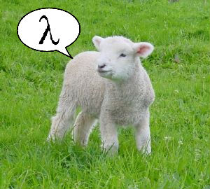
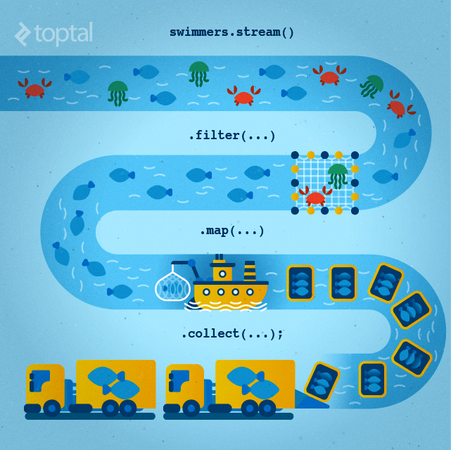
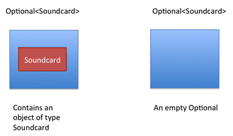
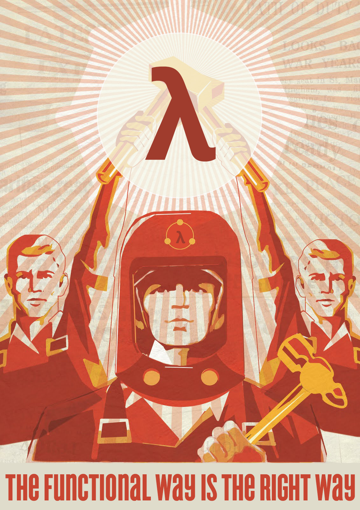

Optionals
Funciones sin nombre, anonimas, lambda functions.

Antes de java 8:
Después de java 8:
List<Person> people = loadPeople(); Collections.sort(people, new Comparator<Person>(){ @Override public int compare (Person p1, Person p2){ return p1.name.compareTo(p2.name) } })
List<Person> people = loadPeople(); Collections.sort(people, (Person p1, Person p2) -> p1.name.compareTo(p2.name) )
List<Person> people = loadPeople(); Collections.sort(people, (p1, p2) -> p1.name.compareTo(p2.name) );
List<Person> people = loadPeople(); people.sort(p1, p2) -> p1.name.compareTo(p2.name));
(int a, int b) > a + b
(int a) > a + 1
(int a, int b) > { System.out.println(a + b); return a + b; }
() > new ArrayList()
Un Stream es un modo de aplicar transformaciones a una secuencia de elementos, por ejemplo una lista o datos a traves de la red (GET HTTP), aplicando todas las transformaciones a la vez, elemento a elemento.

Antes de Java 8:
Después de Java 8:
JAVA 7
List<String> names = new ArrayList<>(); for (Student student : students) { if(student.getName().startsWith("A")){ names.add(student.getName()); } }
JAVA 8
List<string> names = students.stream() .map(Student::getName) .filter(name->name.startsWith("A")) .collect(Collectors.toList());
Los Optionals, como su palabra dicen son un objeto que puede contener o no un valor no nulo. Este mola mucho.

article.filter(a -> newerThanAMonth(a))
.orElseGet(() -> getNewestArticle());
forEach
JAVA 7
//Imprimimos cada elemento for (int i = 0; i < list.size(); i++) { System.out.println(list.get(i)); }
JAVA 8
//Imprimimos cada elemento list.forEach(elemento -> System.out.println(elemento) );
//Imprimimos cada elemento list.forEach(System.out::println);
map
JAVA 7
List<Integer> result = new ArrayList<Integer>(); for (Integer digit : numbers) { result.add(digit * digit); }
JAVA 8
List<Integer> squaresList = numbers .stream() .map( i -> i*i) .collect(Collectors.toList());
filter
JAVA 7
Iterator<Car> carsIterator = cars.iterator(); int cont = 0; while (carsIterator.hasNext()) { Car c = carsIterator.next(); if (c.getCarColor() == Color.BLUE) { cont ++; } } }
JAVA 8
//get count of empty string int count = cars.stream() .filter(car -> car.getColor().equals(Color.Blue)) .count();
limit
JAVA 7
List<Integer> result = new ArrayList<Integer>(); for (Integer digit : numbers) { result.add(digit * digit); }
JAVA 8
Function<Integer, Integer> square=x -> x*x; List<Integer> squareNumbers = numbers .stream() .map(square) .collect(Collectors.toList());
limit
JAVA 7
for(int i = 0; i <= 10; i++) { Random rnd = new Random(); System.out.println(rnd.nextInt()); }
JAVA 8
Random random = new Random(); random.ints().limit(10) .forEach(System.out::println);
sorted
JAVA 7
Collections.sort(
nList,
Collections.reverseOrder());
for(int n: nList) {
System.out.println(n);
}
JAVA 8
random.ints()
.limit(10)
.sorted()
.forEach(System.out::println);
flatMap
JAVA 7
List<List<Integer>> integerLists = Arrays.asList( Arrays.asList(1, 2), Arrays.asList(3, 4), Arrays.asList(5) ) List<Integer> flattened = new ArrayList<>(); for(List<Integer> integerList : integerLists) { flattened.addAll(integerList); } for (Integer i : flattened) { System.out.println(i); }
JAVA 8
//List((1,2), (3, 4), (5)) Stream<List<Integer>> integerListStream = Stream.of( Arrays.asList(1, 2), Arrays.asList(3, 4), Arrays.asList(5) ); //List(1, 2, 3, 4, 5) Stream<Integer> integerStream = integerListStream .flatMap(Collection::stream) .forEach(System.out::println);
Composición? Es la unión de varias de las anteriores funciones, como ya hemos visto en algunos de los ejemplos. Pero no solo eso, también funcionan con los optionals!
//Imaginemos que tenemos una lista "list" de elementos del 0 al 9 //[0, 1, 2, 3, 4, 5, 6, 7, 8, 9] List<Integer> lSquare = list.map(numero -> numero*numero).collect(Collectors.toList()); List<Integer> lFiltradaPar = lSquare.filter(numero -> numero % 2 ==0).collect(Collectors.toList()); // SE pueden unir List<Integer> lUnidas = list .map(numero -> numero*numero) .filter(numero -> numero % 2 == 0) .collect(Collectors.toList());
Si tu tienes una función tal que
Function<Integer,Integer> add3 = (a) -> a + 3 ;
y otra que
Function<Integer,Integer> times2 = (a) -> a * 2 ;
Puedes "unirlas", componerlas, decir que la salida de una, sea la entrada de la otra
Function<Integer,Integer> composedA = add3.compose( times2 ) ;
if(opt.isPresent() && opt.get().contains("ab")) { System.out.println(opt.get()); }
opt.
filter(x -> x.contains("ab")).
ifPresent(System.out::println);
//Imagina una funcion que no puede recibir un null public String findSimilar(@NotNull String s) //... //Para usarla seria... String similarOrNull = x != null? findSimilar(x) : null; // Con map ... Optional<String> similar = opt.map(this::findSimilar); //Esto devolveria un null si contiene null y si no lo ejecutaria pero... //tenemos Optionals public Optional<String> tryFindSimilar(String s) //... //Usando el map aqui nos daria un optional de optional por eso Optional<Optional<String>> bad = opt.map(this::tryFindSimilar); Optional<String> similar = opt.flatMap(this::tryFindSimilar);

ACM y [ACM-SIG] Scala
Roberto Sarmiento (Todos me llaman Ashida so… Ashida xD)
Telegram: @Ashida